<!-- rcstudio_whatsapp_coexistence | static/description/index.html | RC Studio -->
<section>
<div style="max-width:1000px;margin:0 auto;font-family:-apple-system,'Segoe UI',Roboto,sans-serif;color:#111827;background-color:#ffffff;padding:16px 16px 24px;border-radius:12px;">

  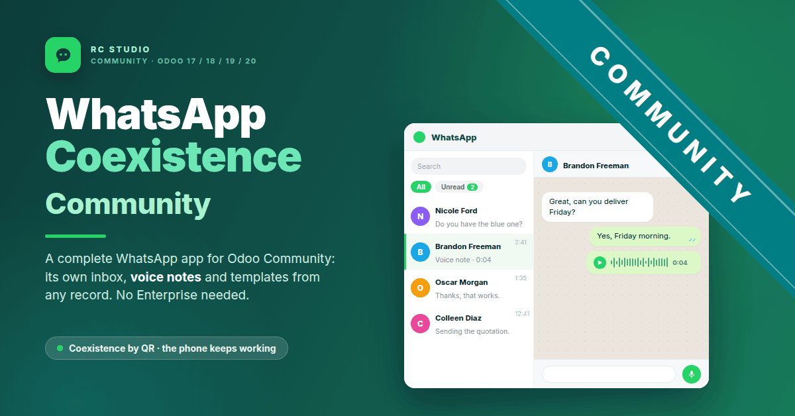

  <table class="mb-3" style="width:100%;border-collapse:collapse;background-color:#017E84;border-radius:12px;"><tr><td style="padding:18px 8px 18px 26px;width:1%;white-space:nowrap;vertical-align:middle;"><span style="font-size:30px;font-weight:800;letter-spacing:.16em;color:#ffffff;line-height:1;">COMMUNITY</span></td><td style="padding:18px 26px 18px 18px;vertical-align:middle;"><div style="font-size:20px;font-weight:700;color:#ffffff;line-height:1.3;">Works on Odoo Community 17, 18, 19 and 20</div><div style="font-size:15px;color:#D9F5F3;line-height:1.5;margin-top:4px;">Nothing from Enterprise is needed: no native WhatsApp app, no Enterprise subscription. It also runs on Enterprise, but it is built for Community.</div></td></tr></table>
    <div class="mb-4" style="background-color:#115E59;border-radius:12px;padding:38px 36px;">
    <div style="font-size:12px;letter-spacing:.14em;text-transform:uppercase;color:#25D366;font-weight:700;margin-bottom:12px;">RC Studio &middot; Community &middot; Odoo 17 / 18 / 19 / 20</div>
    <h1 style="font-size:38px;line-height:1.15;font-weight:700;color:#ffffff;margin:0 0 14px;">WhatsApp Coexistence Community</h1>
    <p style="font-size:19px;line-height:1.55;color:#D1FAE5;margin:0 0 24px;max-width:46em;">WhatsApp for Odoo Community on Meta&rsquo;s Cloud API: keep the number you already use on the phone, answer from an inbox in Odoo, and send quotations, invoices and deliveries from any record.</p>
    <div class="row">
      <div class="col-md-3 col-6 mb-2"><div style="border-left:3px solid #25D366;padding-left:12px;"><div style="font-size:15px;font-weight:700;color:#ffffff;line-height:1.35;">Coexistence</div><div style="font-size:13px;color:#A7F3D0;line-height:1.4;">Scan a QR, the phone keeps working</div></div></div>
      <div class="col-md-3 col-6 mb-2"><div style="border-left:3px solid #25D366;padding-left:12px;"><div style="font-size:15px;font-weight:700;color:#ffffff;line-height:1.35;">Or a WABA API Connection</div><div style="font-size:13px;color:#A7F3D0;line-height:1.4;">Cloud API with your own Meta app</div></div></div>
      <div class="col-md-3 col-6 mb-2"><div style="border-left:3px solid #25D366;padding-left:12px;"><div style="font-size:15px;font-weight:700;color:#ffffff;line-height:1.35;">Its own inbox</div><div style="font-size:13px;color:#A7F3D0;line-height:1.4;">Not Discuss: built for the people who answer</div></div></div>
      <div class="col-md-3 col-6 mb-2"><div style="border-left:3px solid #25D366;padding-left:12px;"><div style="font-size:15px;font-weight:700;color:#ffffff;line-height:1.35;">One app, no dependencies</div><div style="font-size:13px;color:#A7F3D0;line-height:1.4;">On-premise &middot; no Enterprise needed</div></div></div>
    </div>
    <div style="margin-top:22px;padding-top:18px;border-top:1px solid rgba(255,255,255,.2);"><span style="display:inline-block;background-color:#25D366;color:#064E3B;font-size:12px;font-weight:800;letter-spacing:.12em;border-radius:4px;padding:4px 10px;vertical-align:middle;">8 LANGUAGES</span><span style="font-size:16px;color:#ffffff;line-height:1.6;margin-left:12px;vertical-align:middle;">Available in <b>English</b>, <b>Spanish</b>, <b>German</b>, <b>French</b>, <b>Portuguese</b> (Portugal and Brazil), <b>Italian</b> and <b>Arabic</b> &mdash; right-to-left included.</span></div>
  </div>

  <div class="mb-4" style="border-bottom:2px solid #E5E7EB;"><ul class="nav nav-tabs" role="tablist" style="border-bottom:none;">
    <li class="nav-item" role="presentation"><a class="nav-link active" data-bs-toggle="tab" href="#rcs-wa-overview" role="tab" style="font-size:16px;font-weight:700;color:#115E59;padding:12px 20px;border-radius:8px 8px 0 0;">Overview</a></li>
    <li class="nav-item" role="presentation"><a class="nav-link" data-bs-toggle="tab" href="#rcs-wa-setup" role="tab" style="font-size:16px;font-weight:700;color:#115E59;padding:12px 20px;border-radius:8px 8px 0 0;">Setup</a></li>
    <li class="nav-item" role="presentation"><a class="nav-link" data-bs-toggle="tab" href="#rcs-wa-manual" role="tab" style="font-size:16px;font-weight:700;color:#115E59;padding:12px 20px;border-radius:8px 8px 0 0;">User manual</a></li>
    <li class="nav-item" role="presentation"><a class="nav-link" data-bs-toggle="tab" href="#rcs-wa-faq" role="tab" style="font-size:16px;font-weight:700;color:#115E59;padding:12px 20px;border-radius:8px 8px 0 0;">FAQ</a></li>
    <li class="nav-item" role="presentation"><a class="nav-link" data-bs-toggle="tab" href="#rcs-wa-support" role="tab" style="font-size:16px;font-weight:700;color:#115E59;padding:12px 20px;border-radius:8px 8px 0 0;">Support</a></li>
  </ul></div>

  <div class="tab-content">

  <!-- ===================================================== OVERVIEW -->
  <div class="tab-pane fade show active" id="rcs-wa-overview" role="tabpanel">

    <div class="mb-4" style="background-color:#EFF6FF;border:1px solid #3B82F6;border-left:4px solid #3B82F6;border-radius:8px;padding:20px 22px;">
      <div style="font-size:18px;font-weight:700;color:#111827;margin:0 0 10px;">Where this module runs</div>
      <p style="font-size:16px;line-height:1.65;color:#374151;margin:0 0 8px;"><b>Odoo Community, on-premise.</b> Odoo Online (SaaS) does not accept third-party modules. The instance must be reachable from the public internet over HTTPS, because Meta delivers inbound messages to a webhook on your own domain.</p>
      <p style="font-size:16px;line-height:1.65;color:#374151;margin:0;">A WABA API Connection does not need a Tech Provider: your own Meta developer app is enough, and nothing transits RC Studio.</p>
    </div>

    <h2 style="font-size:28px;font-weight:700;color:#111827;margin:0 0 14px;line-height:1.2;">Keep your number on the phone. Add Odoo on top.</h2>
    <p style="font-size:18px;line-height:1.6;color:#374151;margin:0 0 20px;">The normal way into the WhatsApp Cloud API asks you to give up your number: once it is migrated, it stops working in the WhatsApp Business app on the phone. Coexistence is Meta&rsquo;s official answer, and this module brings it to Odoo Community. You scan a QR code, and from that moment the same number works in both places: your staff keep replying from the phone, and Odoo sees everything.</p>
    <div class="mb-4"><div style="font-size:13px;color:#6B7280;margin-top:8px;">The inbox with two business numbers connected: Brandon wrote to sales (green cart) and to support (blue headset), and each is its own thread.</div></div>

    <h2 style="font-size:28px;font-weight:700;color:#111827;margin:0 0 14px;line-height:1.2;">What you get</h2>
    <div class="row">
      <div class="col-md-6 col-12 mb-3"><div class="h-100" style="border:1px solid #E5E7EB;border-radius:8px;padding:18px 20px;background-color:#ffffff;"><div style="font-size:28px;line-height:1.1;margin-bottom:8px;">&#128241;</div><div style="font-size:16px;font-weight:700;color:#111827;margin-bottom:4px;">Coexistence, or a WABA API Connection</div><div style="font-size:14px;line-height:1.55;color:#6B7280;">Connect the number of your WhatsApp Business app by QR code, or a WABA API Connection with your own Meta app. Several numbers in one database, each with its own operators and companies.</div></div></div>
      <div class="col-md-6 col-12 mb-3"><div class="h-100" style="border:1px solid #E5E7EB;border-radius:8px;padding:18px 20px;background-color:#ffffff;"><div style="font-size:28px;line-height:1.1;margin-bottom:8px;">&#128229;</div><div style="font-size:16px;font-weight:700;color:#111827;margin-bottom:4px;">An inbox built for answering</div><div style="font-size:14px;line-height:1.55;color:#6B7280;">Search, unread, mine and closed filters, a selector per number, live updates, delivery ticks, media, quoted replies, reactions, assignment, and the messages your team sends from the phone mirrored in the same thread.</div></div></div>
      <div class="col-md-6 col-12 mb-3"><div class="h-100" style="border:1px solid #E5E7EB;border-radius:8px;padding:18px 20px;background-color:#ffffff;"><div style="font-size:28px;line-height:1.1;margin-bottom:8px;">&#128196;</div><div style="font-size:16px;font-weight:700;color:#111827;margin-bottom:4px;">Documents from any record</div><div style="font-size:14px;line-height:1.55;color:#6B7280;">A <b>Send by WhatsApp</b> action on contacts, quotations, invoices, deliveries, leads, tasks, events, appointments, purchase and POS orders. The template is filled from the record and the PDF report travels as the document header.</div></div></div>
      <div class="col-md-6 col-12 mb-3"><div class="h-100" style="border:1px solid #E5E7EB;border-radius:8px;padding:18px 20px;background-color:#ffffff;"><div style="font-size:28px;line-height:1.1;margin-bottom:8px;">&#129513;</div><div style="font-size:16px;font-weight:700;color:#111827;margin-bottom:4px;">Templates synced with Meta</div><div style="font-size:14px;line-height:1.55;color:#6B7280;">Header, body, footer and buttons as Meta defines them. Each placeholder is mapped to a field of the record, a fixed value, a value asked when sending, or the portal link. A sample library for the apps you have installed.</div></div></div>
      <div class="col-md-6 col-12 mb-3"><div class="h-100" style="border:1px solid #E5E7EB;border-radius:8px;padding:18px 20px;background-color:#ffffff;"><div style="font-size:28px;line-height:1.1;margin-bottom:8px;">&#9889;</div><div style="font-size:16px;font-weight:700;color:#111827;margin-bottom:4px;">Automatic sends</div><div style="font-size:14px;line-height:1.55;color:#6B7280;">A <b>Send WhatsApp template</b> server action for automation rules: order confirmed, invoice posted, delivery done. Bulk sending from any list. A WhatsApp shortcut next to every phone field.</div></div></div>
      <div class="col-md-6 col-12 mb-3"><div class="h-100" style="border:1px solid #E5E7EB;border-radius:8px;padding:18px 20px;background-color:#ffffff;"><div style="font-size:28px;line-height:1.1;margin-bottom:8px;">&#128274;</div><div style="font-size:16px;font-weight:700;color:#111827;margin-bottom:4px;">Roles, opt-out, retries</div><div style="font-size:14px;line-height:1.55;color:#6B7280;">Operators see only the numbers they are assigned to. A customer who replies STOP is blacklisted. Failed sends are retried, and every message keeps its Meta status and error code. Nothing is ever purged.</div></div></div>
      <div class="col-md-6 col-12 mb-3"><div class="h-100" style="border:1px solid #E5E7EB;border-radius:8px;padding:18px 20px;background-color:#ffffff;"><div style="font-size:28px;line-height:1.1;margin-bottom:8px;">&#128737;&#65039;</div><div style="font-size:16px;font-weight:700;color:#111827;margin-bottom:4px;">Meta delivers straight to your Odoo</div><div style="font-size:14px;line-height:1.55;color:#6B7280;">No message, media file or status passes through RC Studio: its service only takes part while the number is being connected.</div></div></div>
    </div>

    <h2 style="font-size:28px;font-weight:700;color:#111827;margin:0 0 14px;line-height:1.2;">A tour in five screens</h2><p style="font-size:16px;line-height:1.65;color:#374151;margin:0 0 16px;">Several numbers in one inbox, the icon that tells them apart, the per-number filter and a template sent from a quotation. Click a step to switch the picture.</p>
    <div id="rcs-wa-gal" class="mb-4"><div class="tab-content" style="border:1px solid #E5E7EB;border-radius:8px;overflow:hidden;background-color:#F9FAFB;">
<div class="tab-pane fade show active" id="rcs-wa-gal-1" role="tabpanel">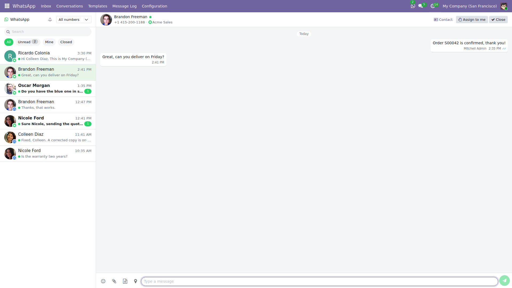<div style="background-color:#115E59;padding:10px 16px;font-size:15px;font-weight:700;color:#ffffff;line-height:1.4;">One inbox for all your numbers: the badge on each avatar says which number the customer wrote to</div></div>
<div class="tab-pane fade" id="rcs-wa-gal-2" role="tabpanel">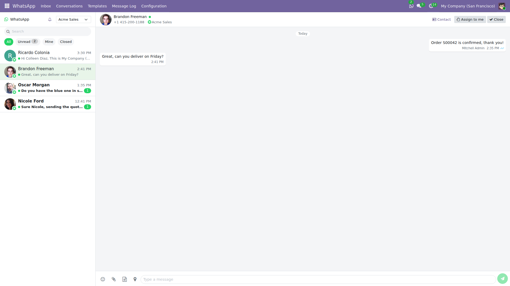<div style="background-color:#115E59;padding:10px 16px;font-size:15px;font-weight:700;color:#ffffff;line-height:1.4;">Filtered to the sales number: only its conversations, with the green icon</div></div>
<div class="tab-pane fade" id="rcs-wa-gal-3" role="tabpanel">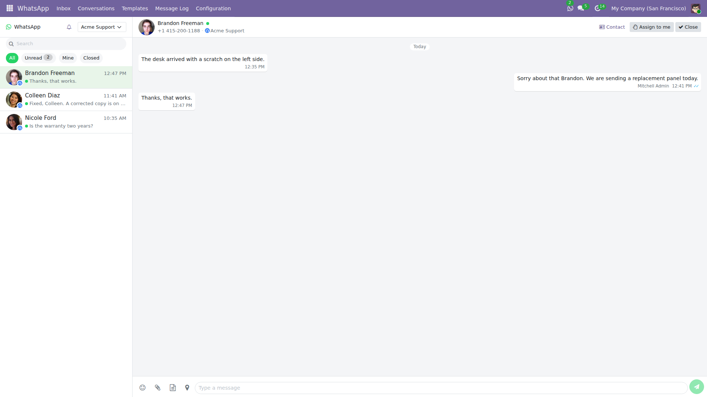<div style="background-color:#115E59;padding:10px 16px;font-size:15px;font-weight:700;color:#ffffff;line-height:1.4;">Filtered to the support number: the same customers, their own threads, the blue icon</div></div>
<div class="tab-pane fade" id="rcs-wa-gal-4" role="tabpanel">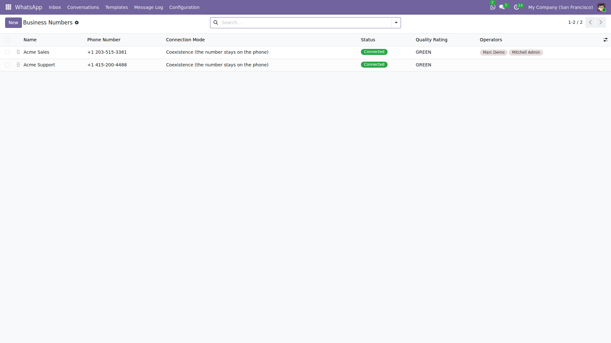<div style="background-color:#115E59;padding:10px 16px;font-size:15px;font-weight:700;color:#ffffff;line-height:1.4;">Each business number has its icon, operators and templates</div></div>
<div class="tab-pane fade" id="rcs-wa-gal-5" role="tabpanel">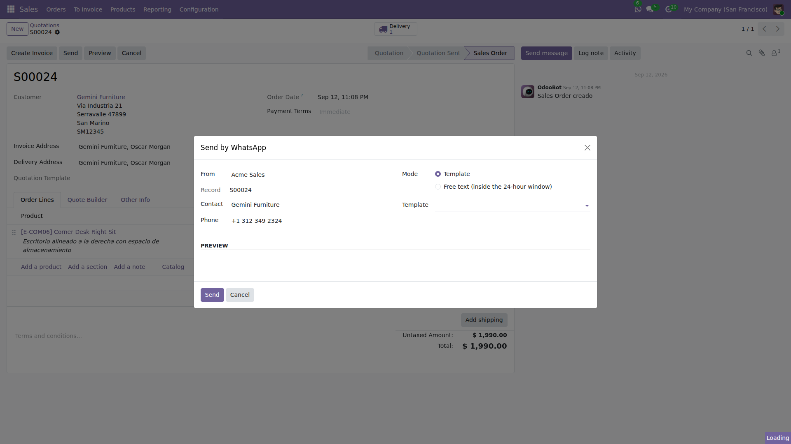<div style="background-color:#115E59;padding:10px 16px;font-size:15px;font-weight:700;color:#ffffff;line-height:1.4;">Send by WhatsApp from a quotation, with the PDF attached</div></div>
</div>
<ul class="nav nav-pills mt-2" role="tablist" style="gap:6px;">
<li class="nav-item" role="presentation"><a class="nav-link active" data-bs-toggle="tab" href="#rcs-wa-gal-1" role="tab" style="font-size:13px;font-weight:700;padding:6px 14px;border:1px solid #E5E7EB;border-radius:20px;">1 &middot; All numbers</a></li>
<li class="nav-item" role="presentation"><a class="nav-link" data-bs-toggle="tab" href="#rcs-wa-gal-2" role="tab" style="font-size:13px;font-weight:700;padding:6px 14px;border:1px solid #E5E7EB;border-radius:20px;">2 &middot; Sales number</a></li>
<li class="nav-item" role="presentation"><a class="nav-link" data-bs-toggle="tab" href="#rcs-wa-gal-3" role="tab" style="font-size:13px;font-weight:700;padding:6px 14px;border:1px solid #E5E7EB;border-radius:20px;">3 &middot; Support number</a></li>
<li class="nav-item" role="presentation"><a class="nav-link" data-bs-toggle="tab" href="#rcs-wa-gal-4" role="tab" style="font-size:13px;font-weight:700;padding:6px 14px;border:1px solid #E5E7EB;border-radius:20px;">4 &middot; The numbers</a></li>
<li class="nav-item" role="presentation"><a class="nav-link" data-bs-toggle="tab" href="#rcs-wa-gal-5" role="tab" style="font-size:13px;font-weight:700;padding:6px 14px;border:1px solid #E5E7EB;border-radius:20px;">5 &middot; Send from a quotation</a></li>
</ul><div style="font-size:13px;color:#6B7280;margin-top:6px;">Click a step to see it.</div></div>

    <h2 style="font-size:28px;font-weight:700;color:#111827;margin:0 0 14px;line-height:1.2;">Requirements</h2>
    <div class="mb-4" style="border:1px solid #E5E7EB;border-radius:8px;overflow:hidden;"><table class="w-100" style="border-collapse:collapse;font-size:15px;">
      <tr style="background-color:#F9FAFB;"><td style="padding:12px 16px;border-bottom:1px solid #E5E7EB;font-weight:700;color:#111827;width:34%;vertical-align:top;">Hosting</td><td style="padding:12px 16px;border-bottom:1px solid #E5E7EB;color:#374151;">Odoo Community 17.0, 18.0, 19.0 or 20.0, on-premise. Not available on Odoo Online.</td></tr>
      <tr style="background-color:#ffffff;"><td style="padding:12px 16px;border-bottom:1px solid #E5E7EB;font-weight:700;color:#111827;width:34%;vertical-align:top;">Public HTTPS URL</td><td style="padding:12px 16px;border-bottom:1px solid #E5E7EB;color:#374151;">Meta delivers inbound messages to a webhook on your domain.</td></tr>
      <tr style="background-color:#F9FAFB;"><td style="padding:12px 16px;border-bottom:1px solid #E5E7EB;font-weight:700;color:#111827;width:34%;vertical-align:top;">Meta connection</td><td style="padding:12px 16px;border-bottom:1px solid #E5E7EB;color:#374151;"><b>One of the two options below, not both.</b> Each business number uses one; a database can mix them.</td></tr>
      <tr style="background-color:#ffffff;"><td style="padding:12px 16px 12px 32px;border-bottom:1px solid #E5E7EB;font-weight:700;color:#111827;width:34%;vertical-align:top;">Option A &middot; Coexistence</td><td style="padding:12px 16px;border-bottom:1px solid #E5E7EB;color:#374151;">A Tech Provider app approved by Meta for WhatsApp Business App Onboarding: RC Studio&rsquo;s (licence key), yours, or a third party&rsquo;s. The number must be active in the WhatsApp Business app for at least 7 days, on a business account, Android 2.24.17+ or iOS 24.17+. No Meta developer app of your own is needed if using RC Studio Coexistence Service. It is needed however if you choose to be your own tech provider.</td></tr>
      <tr style="background-color:#F9FAFB;"><td style="padding:12px 16px 12px 32px;border-bottom:1px solid #E5E7EB;font-weight:700;color:#111827;width:34%;vertical-align:top;">Option B &middot; WABA API Connection</td><td style="padding:12px 16px;border-bottom:1px solid #E5E7EB;color:#374151;">Your own Meta developer app with the WhatsApp product, a WhatsApp Business Account and a phone number registered on the Cloud API. No Tech Provider and no licence needed; the number stops working in the phone app.</td></tr>
      <tr style="background-color:#F9FAFB;"><td style="padding:12px 16px;border-bottom:1px solid #E5E7EB;font-weight:700;color:#111827;width:34%;vertical-align:top;">Python dependencies</td><td style="padding:12px 16px;border-bottom:1px solid #E5E7EB;color:#374151;">phonenumbers and requests.</td></tr>
      <tr style="background-color:#ffffff;"><td style="padding:12px 16px;border-bottom:1px solid #E5E7EB;font-weight:700;color:#111827;width:34%;vertical-align:top;">Odoo dependencies</td><td style="padding:12px 16px;border-bottom:1px solid #E5E7EB;color:#374151;">Only Discuss, Phone numbers validation and Automation Rules, all in Community. No other paid module is needed.</td></tr>
    <tr style="background-color:#F9FAFB;"><td style="padding:12px 16px;border-bottom:1px solid #E5E7EB;font-weight:700;color:#111827;width:34%;vertical-align:top;">Voice notes (optional)</td><td style="padding:12px 16px;border-bottom:1px solid #E5E7EB;color:#374151;">Nothing on the server for <b>Chrome, Edge and Firefox</b>: they record Opus and the inbox packages it as the OGG/Opus voice message WhatsApp plays as a voice note, in the browser itself. <b>Safari</b> cannot record Opus, so operators on Safari need <code>ffmpeg</code> installed on the Odoo server, which converts their recording; without it the microphone button explains that. Nothing else depends on ffmpeg.</td></tr></table></div>
    <h2 style="font-size:28px;font-weight:700;color:#111827;margin:0 0 14px;line-height:1.2;">The RC Studio WhatsApp range</h2><p style="font-size:16px;line-height:1.65;color:#374151;margin:0 0 16px;">Four modules, sold separately. One is a complete WhatsApp app for Odoo Community; three extend Odoo&rsquo;s own WhatsApp app on Enterprise and work together. The links go to Odoo Apps.</p><div class="mb-4" style="background-color:#714B67;border-radius:12px;padding:26px 28px;"><div style="font-size:26px;font-weight:800;color:#ffffff;line-height:1.25;margin-bottom:10px;">Running Odoo Enterprise? We&rsquo;ve got your back too.</div><p style="font-size:16px;line-height:1.6;color:#F3F4F6;margin:0 0 18px;">On Enterprise you do not need this module: <b>WhatsApp Coexistence</b> plugs the same QR onboarding, with the same RC Studio licence or your own Tech Provider app, into Odoo&rsquo;s native WhatsApp app. Two companions complete it: <b>Single Thread and Inbox</b> and <b>Account Icon on Threads</b>.</p><div class="row"><div class="col-md-7 col-12 mb-3"><a href="https://apps.odoo.com/apps/modules/18.0/whatsapp_coexistence/"></a></div><div class="col-md-5 col-12 mb-3"><div style="background-color:rgba(255,255,255,.14);border-radius:8px;padding:14px 18px;height:100%;"><span style="display:inline-block;background-color:#ffffff;color:#714B67;font-size:11px;font-weight:800;letter-spacing:.14em;border-radius:4px;padding:3px 8px;vertical-align:middle;">ENTERPRISE</span><div style="font-size:19px;font-weight:700;color:#ffffff;margin-top:8px;">WhatsApp Coexistence</div><div style="font-size:14px;line-height:1.55;color:#F3F4F6;margin-top:6px;">Adds a Coexistence connection type to Odoo&rsquo;s native WhatsApp app: scan a QR code and keep the number working on the phone.</div></div></div></div><a href="https://apps.odoo.com/apps/modules/18.0/whatsapp_coexistence/" style="display:inline-block;background-color:#ffffff;color:#714B67;font-weight:800;text-decoration:none;border-radius:8px;padding:12px 22px;font-size:16px;">See WhatsApp Coexistence on Odoo Apps &rarr;</a></div><div class="row"><div class="col-md-6 col-12 mb-3"><div class="h-100" style="border:1px solid #E5E7EB;border-left:5px solid #017E84;border-radius:8px;padding:16px 18px 18px;background-color:#ffffff;"><div style="margin-bottom:12px;">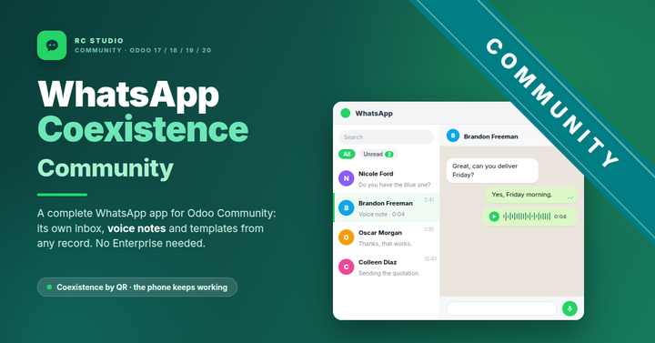</div><span style="display:inline-block;background-color:#017E84;color:#ffffff;font-size:11px;font-weight:800;letter-spacing:.14em;border-radius:4px;padding:3px 8px;vertical-align:middle;">COMMUNITY</span> <span style="display:inline-block;background-color:#6B7280;color:#ffffff;font-size:11px;font-weight:800;letter-spacing:.14em;border-radius:4px;padding:3px 8px;vertical-align:middle;">THIS MODULE</span><div style="font-size:17px;font-weight:700;color:#111827;margin:10px 0 6px;">WhatsApp Coexistence Community</div><div style="font-size:14px;line-height:1.55;color:#6B7280;margin-bottom:12px;">WhatsApp for Odoo Community: coexistence by QR code or a dedicated Cloud API number, its own WhatsApp-Web-style inbox with voice notes, templates and documents sent from any record. No Enterprise needed.</div></div></div><div class="col-md-6 col-12 mb-3"><div class="h-100" style="border:1px solid #E5E7EB;border-left:5px solid #714B67;border-radius:8px;padding:16px 18px 18px;background-color:#ffffff;"><div style="margin-bottom:12px;"><a href="https://apps.odoo.com/apps/modules/18.0/whatsapp_coexistence/"></a></div><span style="display:inline-block;background-color:#714B67;color:#ffffff;font-size:11px;font-weight:800;letter-spacing:.14em;border-radius:4px;padding:3px 8px;vertical-align:middle;">ENTERPRISE</span><div style="font-size:17px;font-weight:700;color:#111827;margin:10px 0 6px;">WhatsApp Coexistence</div><div style="font-size:14px;line-height:1.55;color:#6B7280;margin-bottom:12px;">Adds a Coexistence connection type to Odoo&rsquo;s native WhatsApp app: scan a QR code and keep the number working on the phone.</div><a href="https://apps.odoo.com/apps/modules/18.0/whatsapp_coexistence/" style="display:inline-block;background-color:#714B67;color:#ffffff;font-weight:700;text-decoration:none;border-radius:8px;padding:11px 20px;font-size:15px;">View on Odoo Apps &rarr;</a></div></div><div class="col-md-6 col-12 mb-3"><div class="h-100" style="border:1px solid #E5E7EB;border-left:5px solid #714B67;border-radius:8px;padding:16px 18px 18px;background-color:#ffffff;"><div style="margin-bottom:12px;"><a href="https://apps.odoo.com/apps/modules/18.0/whatsapp_single_thread/">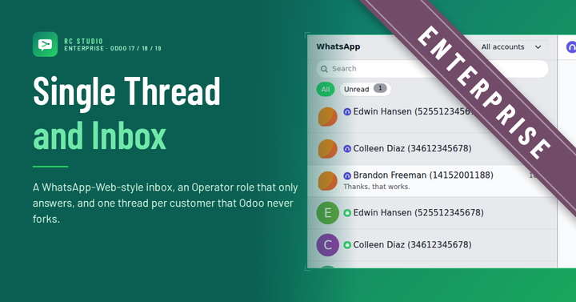</a></div><span style="display:inline-block;background-color:#714B67;color:#ffffff;font-size:11px;font-weight:800;letter-spacing:.14em;border-radius:4px;padding:3px 8px;vertical-align:middle;">ENTERPRISE</span><div style="font-size:17px;font-weight:700;color:#111827;margin:10px 0 6px;">WhatsApp: Single Thread and Inbox</div><div style="font-size:14px;line-height:1.55;color:#6B7280;margin-bottom:12px;">A WhatsApp-Web-style inbox for the people who answer, an Operator role that only replies, and one thread per customer that Odoo never forks.</div><a href="https://apps.odoo.com/apps/modules/18.0/whatsapp_single_thread/" style="display:inline-block;background-color:#714B67;color:#ffffff;font-weight:700;text-decoration:none;border-radius:8px;padding:11px 20px;font-size:15px;">View on Odoo Apps &rarr;</a></div></div><div class="col-md-6 col-12 mb-3"><div class="h-100" style="border:1px solid #E5E7EB;border-left:5px solid #714B67;border-radius:8px;padding:16px 18px 18px;background-color:#ffffff;"><div style="margin-bottom:12px;"><a href="https://apps.odoo.com/apps/modules/18.0/whatsapp_account_icon/"></a></div><span style="display:inline-block;background-color:#714B67;color:#ffffff;font-size:11px;font-weight:800;letter-spacing:.14em;border-radius:4px;padding:3px 8px;vertical-align:middle;">ENTERPRISE</span><div style="font-size:17px;font-weight:700;color:#111827;margin:10px 0 6px;">WhatsApp: Account Icon on Threads</div><div style="font-size:14px;line-height:1.55;color:#6B7280;margin-bottom:12px;">An icon per business number, shown on every thread, so two numbers are told apart at a glance. Free.</div><a href="https://apps.odoo.com/apps/modules/18.0/whatsapp_account_icon/" style="display:inline-block;background-color:#714B67;color:#ffffff;font-weight:700;text-decoration:none;border-radius:8px;padding:11px 20px;font-size:15px;">View on Odoo Apps &rarr;</a></div></div></div><!-- /rcs-range --><div class="mb-4" style="background-color:#FFFBEB;border:1px solid #F59E0B;border-left:4px solid #F59E0B;border-radius:8px;padding:20px 22px;">
      <div style="font-size:18px;font-weight:700;color:#111827;margin:0 0 10px;">&#9888;&#65039; Before you buy: Coexistence needs a Meta Tech Provider</div>
      <p style="font-size:16px;line-height:1.65;color:#374151;margin:0 0 12px;">WhatsApp Coexistence is onboarded through Meta&rsquo;s Embedded Signup, which only works through an app registered with Meta as a <b>Tech Provider</b> and approved for the <b>WhatsApp Business App Onboarding</b> feature. A plain Meta developer app cannot do it. There are two ways to satisfy that requirement:</p>
      <div style="font-size:16px;font-weight:700;color:#111827;margin:0 0 4px;">1. Use RC Studio as your Tech Provider (recommended)</div>
      <p style="font-size:16px;line-height:1.65;color:#374151;margin:0 0 12px;">You buy a licence key, paste it into Odoo and connect by scanning a QR code. Nothing to register with Meta, no app review, no domain whitelisting. The licence is billed separately from this module and is not included in this purchase.</p>
      <div style="font-size:16px;font-weight:700;color:#111827;margin:0 0 4px;">2. Use any other Tech Provider, including your own approved app</div>
      <p style="font-size:16px;line-height:1.65;color:#374151;margin:0 0 12px;">This module works with any of them. You enter the App ID, the App Secret and the Login Configuration ID that your provider gives you, and the connection runs through their Meta app instead of RC Studio&rsquo;s.</p>
      <div style="background-color:#FEF3C7;border-radius:6px;padding:12px 14px;">
        <div style="font-size:15px;font-weight:700;color:#111827;margin:0 0 4px;">Read this before choosing option 2.</div>
        <p style="font-size:15px;line-height:1.6;color:#374151;margin:0;">Those credentials are issued by that provider, not by RC Studio. RC Studio cannot obtain them on your behalf and is not responsible if your provider does not hand them over, revokes them, charges extra for them, or has not been approved by Meta for the WhatsApp Business App Onboarding feature. Confirm with your provider that you will receive an App ID, an App Secret and a coexistence Login Configuration before you buy this module.</p>
      </div>
    </div>

  </div>

  <!-- ======================================================== SETUP -->
  <div class="tab-pane fade" id="rcs-wa-setup" role="tabpanel">
    <h2 style="font-size:28px;font-weight:700;color:#111827;margin:0 0 14px;line-height:1.2;">Install the module</h2>
    <ul style="font-size:16px;line-height:1.7;color:#374151;margin:0 0 18px;padding-left:22px;">
      <li style="margin-bottom:7px;">Make sure the Python packages <code>phonenumbers</code> and <code>requests</code> are available to Odoo. Both are part of Odoo&rsquo;s own <code>requirements.txt</code>, so a standard install already has them; Odoo refuses to install the module if they are missing (an Odoo module cannot run pip for you). If needed, run the line that matches your setup and restart Odoo:</li>
    </ul>
    <div class="mb-3" style="background-color:#111827;color:#E5E7EB;border-radius:8px;padding:14px 18px;font-family:SFMono-Regular,Menlo,Consolas,monospace;font-size:13px;line-height:1.8;">
      <div style="color:#9CA3AF;"># Odoo installed from the .deb / .rpm package</div>
      <div>sudo pip3 install phonenumbers requests</div>
      <div style="color:#9CA3AF;margin-top:6px;"># Odoo running in a virtualenv (adjust the path to yours)</div>
      <div>/opt/odoo/venv/bin/pip install phonenumbers requests</div>
      <div style="color:#9CA3AF;margin-top:6px;"># Debian / Ubuntu system packages</div>
      <div>sudo apt install python3-phonenumbers python3-requests</div>
      <div style="color:#9CA3AF;margin-top:6px;"># Docker (official image): add to your Dockerfile or run inside the container</div>
      <div>pip3 install phonenumbers requests</div>
      <div style="color:#9CA3AF;margin-top:6px;"># Voice notes from Safari only (Chrome, Edge and Firefox need nothing): ffmpeg on the server, Debian / Ubuntu</div>
      <div>sudo apt install ffmpeg</div>
    </div>
    <ul style="font-size:16px;line-height:1.7;color:#374151;margin:0 0 18px;padding-left:22px;">
      <li style="margin-bottom:7px;">Unzip the module into your addons folder and restart the Odoo service.</li>
      <li style="margin-bottom:7px;"><b>Settings &rarr; Apps &rarr; Update Apps List</b>, search for &ldquo;WhatsApp&rdquo; and install <b>WhatsApp Coexistence Community</b>.</li>
      <li style="margin-bottom:7px;">Give your users the <b>WhatsApp / Operator</b> or <b>Manager</b> access right.</li>
    </ul>

    <h2 style="font-size:28px;font-weight:700;color:#111827;margin:0 0 14px;line-height:1.2;">Mode A &middot; Coexistence with an RC Studio licence (recommended)</h2>
    <p style="font-size:16px;line-height:1.65;color:#374151;margin:0 0 16px;">The whole setup is: paste the key, press Connect, scan the QR. Nothing to register with Meta, no app review and no domain to whitelist, because the Facebook dialog runs on RC Studio&rsquo;s own page.</p>
    <div class="row">
      <div class="col-md-6 col-12 mb-3"><div class="h-100" style="border:1px solid #E5E7EB;border-radius:8px;padding:18px 20px;"><div style="font-size:13px;font-weight:700;letter-spacing:.08em;text-transform:uppercase;color:#115E59;">Step 1</div><div style="font-size:17px;font-weight:700;color:#111827;margin:6px 0 5px;">Get your licence key</div><div style="font-size:14px;line-height:1.55;color:#374151;">Buy and manage it here:<div style="border:2px solid #25D366;border-radius:10px;padding:14px 18px;margin:10px 0 4px;background-color:#F0FDF4;"><div style="font-size:12px;letter-spacing:.12em;text-transform:uppercase;color:#115E59;font-weight:700;margin-bottom:6px;">Licence keys</div><a href="https://coexistence.rcstudio.dev" style="font-size:19px;font-weight:700;color:#115E59;text-decoration:underline;white-space:nowrap;line-height:1.3;">https://coexistence.rcstudio.dev</a></div></div></div></div>
      <div class="col-md-6 col-12 mb-3"><div class="h-100" style="border:1px solid #E5E7EB;border-radius:8px;padding:18px 20px;"><div style="font-size:13px;font-weight:700;letter-spacing:.08em;text-transform:uppercase;color:#115E59;">Step 2</div><div style="font-size:17px;font-weight:700;color:#111827;margin:6px 0 5px;">Create the number</div><div style="font-size:14px;line-height:1.55;color:#374151;">In Odoo: <b>WhatsApp &rarr; Configuration &rarr; Business Numbers &rarr; New</b>. Name it and choose <b>Coexistence</b> and <b>RC Studio&rsquo;s Tech Provider service</b>.</div></div></div>
      <div class="col-md-6 col-12 mb-3"><div class="h-100" style="border:1px solid #E5E7EB;border-radius:8px;padding:18px 20px;"><div style="font-size:13px;font-weight:700;letter-spacing:.08em;text-transform:uppercase;color:#115E59;">Step 3</div><div style="font-size:17px;font-weight:700;color:#111827;margin:6px 0 5px;">Paste the licence and connect</div><div style="font-size:14px;line-height:1.55;color:#374151;">Paste it into <b>RC Studio Licence</b>, save, and press <b>Connect via Coexistence</b>. A secure RC Studio window opens.</div></div></div>
      <div class="col-md-6 col-12 mb-3"><div class="h-100" style="border:1px solid #E5E7EB;border-radius:8px;padding:18px 20px;"><div style="font-size:13px;font-weight:700;letter-spacing:.08em;text-transform:uppercase;color:#115E59;">Step 4</div><div style="font-size:17px;font-weight:700;color:#111827;margin:6px 0 5px;">Scan the QR</div><div style="font-size:14px;line-height:1.55;color:#374151;">Press the Facebook button, choose <b>add an existing WhatsApp Business account</b> (not a new number) and scan the code with the WhatsApp Business app on the phone.</div></div></div>
      <div class="col-md-6 col-12 mb-3"><div class="h-100" style="border:1px solid #E5E7EB;border-radius:8px;padding:18px 20px;"><div style="font-size:13px;font-weight:700;letter-spacing:.08em;text-transform:uppercase;color:#115E59;">Step 5</div><div style="font-size:17px;font-weight:700;color:#111827;margin:6px 0 5px;">Odoo wires it up</div><div style="font-size:14px;line-height:1.55;color:#374151;">It stores the token, registers the webhook and starts the one-time sync of contacts and history. The number turns <b>Connected</b>.</div></div></div>
      <div class="col-md-6 col-12 mb-3"><div class="h-100" style="border:1px solid #E5E7EB;border-radius:8px;padding:18px 20px;"><div style="font-size:13px;font-weight:700;letter-spacing:.08em;text-transform:uppercase;color:#115E59;">Step 6</div><div style="font-size:17px;font-weight:700;color:#111827;margin:6px 0 5px;">Reply from either side</div><div style="font-size:14px;line-height:1.55;color:#374151;">Conversations appear in the inbox. Reply from Odoo or from the phone; both are recorded.</div></div></div>
    </div>
    <h3 style="font-size:19px;font-weight:700;color:#111827;margin:26px 0 10px;">The three screens you actually see, in licence mode</h3>
    <p style="font-size:16px;line-height:1.65;color:#374151;margin:0 0 16px;">In Mode B, below, there is no RC Studio window: the Facebook dialog opens straight from your own Odoo page, on your own app.</p>
    <div class="row">
      <div class="col-md-4 col-12 mb-3">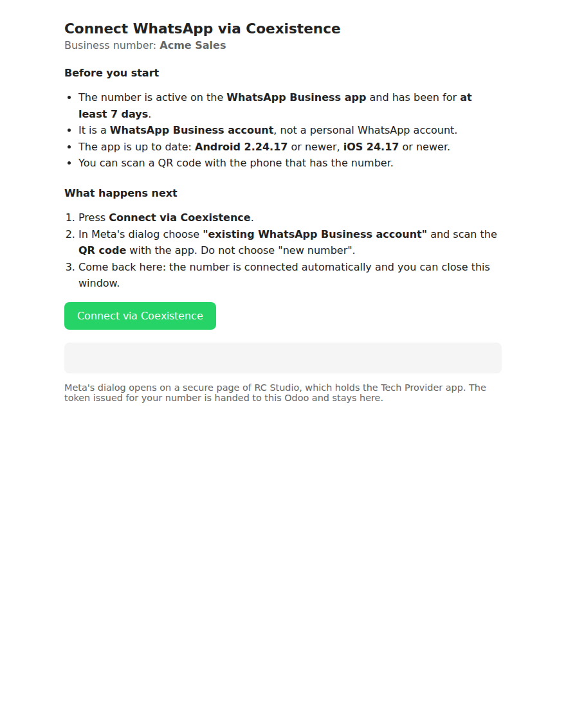<div style="font-size:13px;color:#6B7280;margin-top:8px;">Step 1 &mdash; the Odoo page: prerequisites and the button that opens the secure window.</div></div>
      <div class="col-md-4 col-12 mb-3">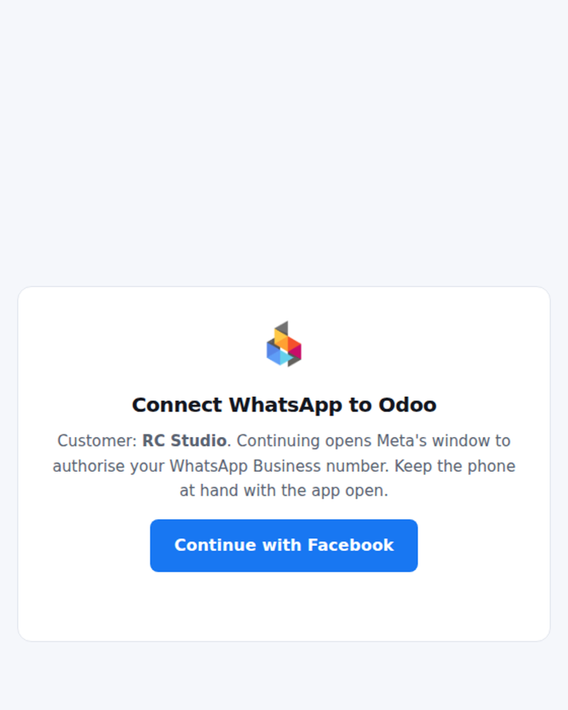<div style="font-size:13px;color:#6B7280;margin-top:8px;">Step 2 &mdash; the RC Studio window, with the button that launches Meta&rsquo;s dialog.</div></div>
      <div class="col-md-4 col-12 mb-3">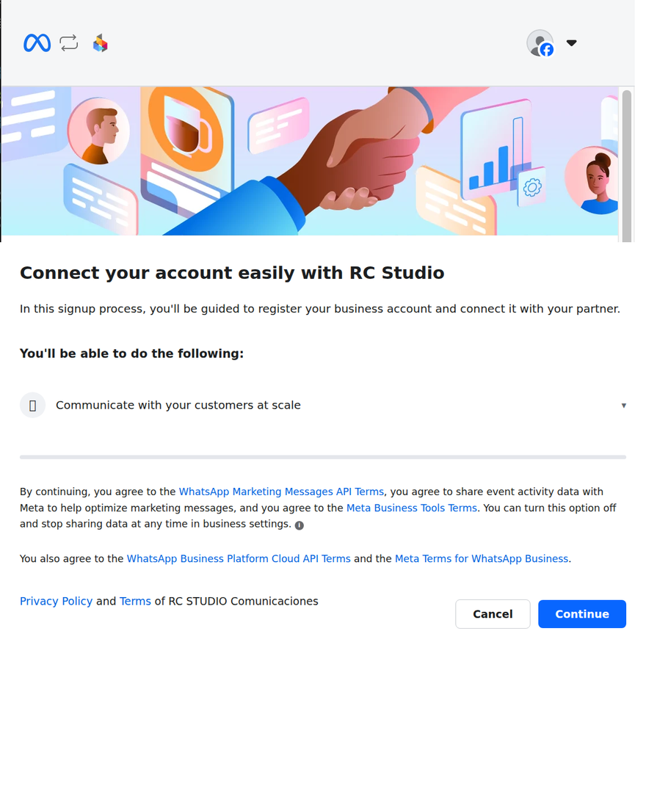<div style="font-size:13px;color:#6B7280;margin-top:8px;">Step 3 &mdash; Meta&rsquo;s dialog. Illustration of the flow, reconstructed in English.</div></div>
    </div>
    <div class="mb-4" style="background-color:#FFFBEB;border:1px solid #F59E0B;border-left:4px solid #F59E0B;border-radius:8px;padding:20px 22px;"><div style="font-size:18px;font-weight:700;color:#111827;margin:0 0 10px;">One chance only</div><p style="font-size:16px;line-height:1.65;color:#374151;margin:0;">Meta allows a single contact sync and a single history sync per onboarding. If they fail, the only way to repeat them is to disconnect the number and connect it again with a new QR code.</p></div>

    <!-- rcs-panel-cuenta --><h3 style="font-size:19px;font-weight:700;color:#111827;margin:26px 0 10px;">Your numbers and your plan, from the licence panel</h3><p style="font-size:16px;line-height:1.65;color:#374151;margin:0 0 16px;">You manage both yourself, in <b>My account</b> at <a href="https://coexistence.rcstudio.dev/account" style="color:#115E59;font-weight:700;text-decoration:underline;">coexistence.rcstudio.dev/account</a>. Nothing has to be requested from us.</p><div class="row mb-4"><div class="col-md-6 col-12 mb-3"><div class="h-100" style="border:1px solid #E5E7EB;border-radius:8px;padding:18px 20px;"><div style="font-size:17px;font-weight:700;color:#111827;margin:0 0 8px;">Disconnect a number</div><ul style="font-size:15px;line-height:1.6;color:#374151;margin:0;padding-left:20px;"><li style="margin-bottom:7px;">Press <b>Disconnect</b> next to the number. Odoo stops receiving its messages and its slot is free for another number.</li><li style="margin-bottom:7px;">The phone keeps working as before, and the chats stay on it.</li><li style="margin-bottom:7px;">Meta imports the history only once per connection. To have it imported again, also unlink the number in the WhatsApp Business app (<b>Settings &rarr; Account &rarr; Business Platform &rarr; Disconnect</b>) before connecting it again.</li></ul></div></div><div class="col-md-6 col-12 mb-3"><div class="h-100" style="border:1px solid #E5E7EB;border-radius:8px;padding:18px 20px;"><div style="font-size:17px;font-weight:700;color:#111827;margin:0 0 8px;">Change plan</div><ul style="font-size:15px;line-height:1.6;color:#374151;margin:0;padding-left:20px;"><li style="margin-bottom:7px;"><b>Switch now:</b> the new plan applies at once. Moving up, you pay today only the difference for the days left until your billing date. Moving down, those days are not refunded.</li><li style="margin-bottom:7px;"><b>Switch on your billing date:</b> the new plan starts then, with no extra charge.</li><li style="margin-bottom:7px;">Your billing date never changes. With PayPal, the old subscription is cancelled on its own, so you are never charged twice. To move to a plan with fewer numbers, first disconnect the ones that would not fit.</li></ul></div></div></div><h2 style="font-size:28px;font-weight:700;color:#111827;margin:0 0 14px;line-height:1.2;">Mode B &middot; Coexistence with your own Tech Provider app</h2>
    <p style="font-size:16px;line-height:1.65;color:#374151;margin:0 0 16px;">This works with your own app or with any other provider&rsquo;s. In both cases the app must be approved by Meta for the <b>WhatsApp Business App Onboarding</b> feature, and <b>the App ID, the App Secret and the Login Configuration ID are handed to you by that provider</b>. RC Studio cannot obtain them and is not responsible if the provider does not deliver them.</p>
    <ul style="font-size:16px;line-height:1.7;color:#374151;margin:0 0 18px;padding-left:22px;">
      <li style="margin-bottom:7px;">Choose <b>Coexistence</b> and <b>Your own Meta Tech Provider app</b>.</li>
      <li style="margin-bottom:7px;">Fill in <b>App ID</b>, <b>App Secret</b> and <b>Login Configuration ID</b> from your app.</li>
      <li style="margin-bottom:7px;">Add your Odoo domain to the Meta app, under <i>App domains</i> and <i>Allowed domains for the JavaScript SDK</i>. This step has no API and has to be done by hand for each domain.</li>
      <li style="margin-bottom:7px;">Press <b>Connect via Coexistence</b> and carry on with the QR.</li>
    </ul>
    <h3 style="font-size:19px;font-weight:700;color:#111827;margin:26px 0 10px;">The two screens you see in Mode B</h3>
    <div class="row">
      <div class="col-md-4 col-12 mb-3"><div style="font-size:13px;color:#6B7280;margin-top:8px;">Step 1 &mdash; the same Odoo page, served from your own domain with your own app.</div></div>
      <div class="col-md-4 col-12 mb-3"><div style="font-size:13px;color:#6B7280;margin-top:8px;">Step 2 &mdash; Meta&rsquo;s dialog opens straight away; scan the QR and you are back in Odoo.</div></div>
    </div>

    <h2 style="font-size:28px;font-weight:700;color:#111827;margin:0 0 14px;line-height:1.2;">Mode C &middot; WABA API Connection</h2>
    <p style="font-size:16px;line-height:1.65;color:#374151;margin:0 0 16px;">No Tech Provider needed. In your Meta developer app with the WhatsApp product, copy the <b>App ID</b>, <b>App Secret</b>, <b>WhatsApp Business Account ID</b>, <b>Phone Number ID</b> and a permanent <b>Access Token</b> (a System User token with the WhatsApp permissions) into the number, choose <b>WABA API Connection (Cloud API)</b> and press <b>Test connection</b>.</p>
    <div class="mb-4">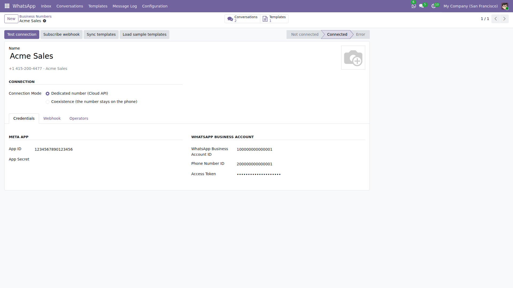</div>

    <h2 style="font-size:28px;font-weight:700;color:#111827;margin:0 0 14px;line-height:1.2;">Webhook</h2>
    <p style="font-size:16px;line-height:1.65;color:#374151;margin:0 0 16px;">Every number has its own <b>Callback URL</b> and <b>Verify Token</b> on the Webhook tab. In coexistence mode Odoo registers them with Meta as part of connecting the number. With a WABA API Connection, either press <b>Subscribe webhook</b> to let Odoo register them on the WhatsApp Business Account, or paste them by hand in the Meta app under <b>WhatsApp &rarr; Configuration &rarr; Webhooks</b> and subscribe to the <b>messages</b> and <b>message_template_status_update</b> fields. Deliveries are checked against Meta&rsquo;s signature with your App Secret. In licence mode that secret belongs to RC Studio&rsquo;s app and is never copied into your database, so the number gets its own secret Callback URL instead: Meta delivers straight to it, the random token inside the URL is what authenticates the call, and any delivery addressed to another business account or another number is dropped. Rotate that token from the Webhook tab if the URL is ever exposed.</p>

    <h2 style="font-size:28px;font-weight:700;color:#111827;margin:0 0 14px;line-height:1.2;">Templates</h2>
    <p style="font-size:16px;line-height:1.65;color:#374151;margin:0 0 16px;">Press <b>Sync templates</b> on a connected number to import the templates approved on Meta, or <b>Load sample templates</b> to get drafts for the apps you have installed (quotation sent, order confirmed, invoice available, delivery on its way, event registration, appointment reminder, receipt, purchase order, lead and task follow-ups). Review a draft, map its placeholders on the <b>Placeholders</b> tab and press <b>Submit to Meta</b>; Odoo learns the outcome of the review through the webhook.</p>
    <div class="mb-4">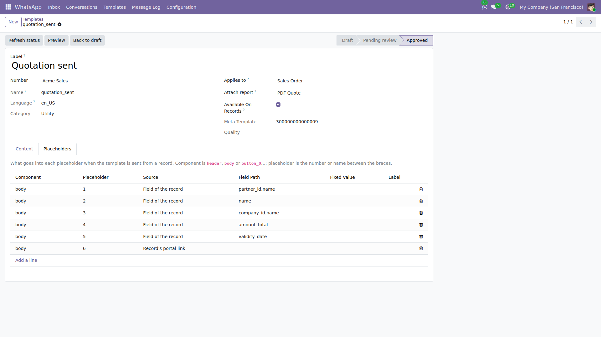<div style="font-size:13px;color:#6B7280;margin-top:8px;">What goes into each placeholder: a field of the record, a fixed value, a value asked when sending, or the portal link.</div></div>

    <h2 style="font-size:28px;font-weight:700;color:#111827;margin:0 0 14px;line-height:1.2;">Roles</h2>
    <div class="mb-4" style="border:1px solid #E5E7EB;border-radius:8px;overflow:hidden;"><table class="w-100" style="border-collapse:collapse;font-size:15px;">
      <tr style="background-color:#F9FAFB;"><td style="padding:12px 16px;border-bottom:1px solid #E5E7EB;font-weight:700;color:#111827;width:34%;vertical-align:top;">Operator</td><td style="padding:12px 16px;border-bottom:1px solid #E5E7EB;color:#374151;">The inbox, the conversations of the numbers they are listed on (a number with no operators is open to every operator), the Send by WhatsApp action. Templates in read-only.</td></tr>
      <tr style="background-color:#ffffff;"><td style="padding:12px 16px;border-bottom:1px solid #E5E7EB;font-weight:700;color:#111827;width:34%;vertical-align:top;">Manager</td><td style="padding:12px 16px;border-bottom:1px solid #E5E7EB;color:#374151;">Numbers and their credentials, templates, the message log, settings and every conversation.</td></tr>
    </table></div>
  </div>

  <!-- ================================================== USER MANUAL -->
  <div class="tab-pane fade" id="rcs-wa-manual" role="tabpanel">
    <h2 style="font-size:28px;font-weight:700;color:#111827;margin:0 0 14px;line-height:1.2;">The inbox</h2>
    <p style="font-size:16px;line-height:1.65;color:#374151;margin:0 0 16px;"><b>WhatsApp &rarr; Inbox.</b> Conversations on the left, newest activity first, with a search box, the <b>All / Unread / Mine / Closed</b> filters and, when there is more than one number, a selector. The thread is on the right: reply with text, emoji and attachments, quote a message, and see the delivery ticks. With nothing typed, the Send button becomes a microphone: press it to record a voice note; the customer receives it as a voice message, with the microphone icon and your profile picture, played straight from the bubble, not as a downloadable file. One thing no API sender can add is the waveform, which only the phone that records computes. Chrome, Edge and Firefox need nothing installed; on Safari the server must have ffmpeg. Voice notes the customer sends play in the thread. New messages arrive live; the WhatsApp icon in the top bar shows how many conversations are waiting. <b>Assign to me</b> and <b>Close</b> keep the list clean; the contact and the documents the customer was written to from are one click away.</p>
    <div class="mb-4"></div>

    <h2 style="font-size:28px;font-weight:700;color:#111827;margin:0 0 14px;line-height:1.2;">One conversation per customer and number</h2>
    <p style="font-size:16px;line-height:1.65;color:#374151;margin:0 0 16px;">Whatever a customer writes and whatever you send them, from the inbox, from a quotation or from an automation, lands in the same thread of that business number. The contact is matched by phone number; if the customer writes to two of your numbers, those are two threads on purpose, told apart by the number&rsquo;s icon. In coexistence mode, the replies your team sends from the phone show up in the thread marked &ldquo;from the phone&rdquo;.</p>

    <h2 style="font-size:28px;font-weight:700;color:#111827;margin:0 0 14px;line-height:1.2;">Several numbers, one inbox</h2>
    <p style="font-size:16px;line-height:1.65;color:#374151;margin:0 0 16px;">Give each business number an icon on its form. The icon shows as a badge on every conversation of that number, so a sales thread and a support thread with the same customer are told apart at a glance. The selector at the top of the list shows all numbers or just one, and operators only see the numbers they are listed on.</p>
    <div class="row">
      <div class="col-md-6 col-12 mb-3"><div style="font-size:13px;color:#6B7280;margin-top:8px;">Filtered to the sales number.</div></div>
      <div class="col-md-6 col-12 mb-3"><div style="font-size:13px;color:#6B7280;margin-top:8px;">Filtered to the support number: same customers, separate threads.</div></div>
    </div>
    <div class="mb-4"><div style="font-size:13px;color:#6B7280;margin-top:8px;">The numbers: connection mode, status and the icon each one wears in the inbox.</div></div>
    <h2 style="font-size:28px;font-weight:700;color:#111827;margin:0 0 14px;line-height:1.2;">Sending a document</h2>
    <p style="font-size:16px;line-height:1.65;color:#374151;margin:0 0 16px;">On a contact, a quotation, an invoice, a delivery, a lead, a task, an event registration, an appointment, a purchase order or a receipt, open the <b>Action</b> menu and choose <b>Send by WhatsApp</b>; the same shortcut sits next to every phone field. Pick the number and the template, fill in any value the template asks for, check the preview and send. The template&rsquo;s PDF report goes along as the document, and a note is left in the record&rsquo;s chatter with a link to the conversation. From a list view, select several records and the same action sends to all of them.</p>
    <div class="mb-4"></div>

    <h2 style="font-size:28px;font-weight:700;color:#111827;margin:0 0 14px;line-height:1.2;">Automatic sends</h2>
    <p style="font-size:16px;line-height:1.65;color:#374151;margin:0 0 16px;">In <b>Settings &rarr; Technical &rarr; Automation Rules</b>, add an action of type <b>Send WhatsApp template</b> and pick the template. Every record that meets the rule gets its message, filled from the record, with no one clicking.</p>

    <h2 style="font-size:28px;font-weight:700;color:#111827;margin:0 0 14px;line-height:1.2;">The 24-hour window and opt-out</h2>
    <p style="font-size:16px;line-height:1.65;color:#374151;margin:0 0 16px;">Twenty-four hours after the customer&rsquo;s last message, WhatsApp only allows approved templates. The composer says so and offers <b>Send a template</b>, which reopens the conversation. If a customer replies <b>STOP</b>, <b>UNSUBSCRIBE</b> or <b>BAJA</b> (the list is yours to change in Settings), the number goes on the blacklist and nothing is sent to it again until it is removed.</p>

    <h2 style="font-size:28px;font-weight:700;color:#111827;margin:0 0 14px;line-height:1.2;">States and retries</h2>
    <p style="font-size:16px;line-height:1.65;color:#374151;margin:0 0 16px;"><b>WhatsApp &rarr; Message Log</b> keeps every message with its state: queued, sent, delivered, read or failed, with Meta&rsquo;s error code when there is one. Temporary failures are retried by a cron every five minutes; final ones can be sent again from the list. Messages are never purged: the log and the conversations are your history.</p>
    <div class="mb-4">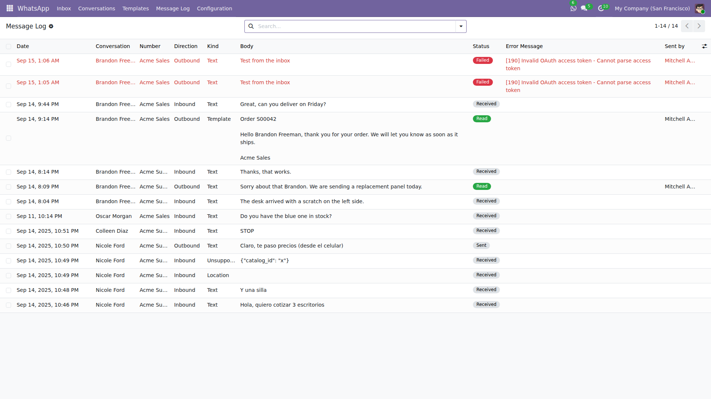</div>
  </div>

  <!-- ========================================================== FAQ -->
  <div class="tab-pane fade" id="rcs-wa-faq" role="tabpanel">
    <h2 style="font-size:28px;font-weight:700;color:#111827;margin:0 0 14px;line-height:1.2;">Frequently asked questions</h2>
    <p style="font-size:16px;line-height:1.65;color:#374151;margin:0 0 16px;">Click a question to open it.</p>
    <div class="accordion">
      <div class="mb-2" style="border:1px solid #E5E7EB;border-radius:8px;overflow:hidden;"><a href="#rcs-wa-q0" data-bs-toggle="collapse" class="d-block" style="padding:15px 18px;text-decoration:none;color:#111827;font-size:16px;font-weight:700;background-color:#F9FAFB;">Do I need to be a Meta Tech Provider?</a><div class="collapse" id="rcs-wa-q0"><div style="padding:4px 18px 18px;font-size:15px;line-height:1.65;color:#374151;">Only for coexistence. Meta&rsquo;s Embedded Signup for the WhatsApp Business app works through a Tech Provider app approved for WhatsApp Business App Onboarding. Either use RC Studio&rsquo;s app with a licence key, register as a Tech Provider yourself, or use another provider that hands you the App ID, the App Secret and the Login Configuration. A WABA API Connection needs none of this: your own Meta developer app is enough.</div></div></div>
      <div class="mb-2" style="border:1px solid #E5E7EB;border-radius:8px;overflow:hidden;"><a href="#rcs-wa-q1" data-bs-toggle="collapse" class="d-block" style="padding:15px 18px;text-decoration:none;color:#111827;font-size:16px;font-weight:700;background-color:#F9FAFB;">Does it work on Odoo Online (SaaS) or on Odoo.sh?</a><div class="collapse" id="rcs-wa-q1"><div style="padding:4px 18px 18px;font-size:15px;line-height:1.65;color:#374151;">Odoo Online does not accept third-party modules, so no. This module is meant for Odoo Community on-premise. It depends only on Community modules, so it also installs on an Odoo.sh project; Odoo.sh support is however not part of what we test.</div></div></div>
      <div class="mb-2" style="border:1px solid #E5E7EB;border-radius:8px;overflow:hidden;"><a href="#rcs-wa-q2" data-bs-toggle="collapse" class="d-block" style="padding:15px 18px;text-decoration:none;color:#111827;font-size:16px;font-weight:700;background-color:#F9FAFB;">Does the phone keep working after connecting?</a><div class="collapse" id="rcs-wa-q2"><div style="padding:4px 18px 18px;font-size:15px;line-height:1.65;color:#374151;">Yes, that is what coexistence means. The number stays active in the WhatsApp Business app; Odoo receives everything through the Cloud API and can send too. Messages sent from the phone are mirrored into Odoo.</div></div></div>
      <div class="mb-2" style="border:1px solid #E5E7EB;border-radius:8px;overflow:hidden;"><a href="#rcs-wa-q3" data-bs-toggle="collapse" class="d-block" style="padding:15px 18px;text-decoration:none;color:#111827;font-size:16px;font-weight:700;background-color:#F9FAFB;">Where do the conversations live? Is Discuss involved?</a><div class="collapse" id="rcs-wa-q3"><div style="padding:4px 18px 18px;font-size:15px;line-height:1.65;color:#374151;">In the module&rsquo;s own conversation and message models, shown in its own inbox. Discuss is not used for WhatsApp threads.</div></div></div>
      <div class="mb-2" style="border:1px solid #E5E7EB;border-radius:8px;overflow:hidden;"><a href="#rcs-wa-q4" data-bs-toggle="collapse" class="d-block" style="padding:15px 18px;text-decoration:none;color:#111827;font-size:16px;font-weight:700;background-color:#F9FAFB;">Does my data go through RC Studio?</a><div class="collapse" id="rcs-wa-q4"><div style="padding:4px 18px 18px;font-size:15px;line-height:1.65;color:#374151;"><b>No. Messages, media and statuses travel straight between your Odoo and Meta&rsquo;s Cloud API, in both directions.</b> Sending was always direct, because the business token lives in your own database. <b>Receiving is direct too:</b> while the number is being connected, RC Studio asks Meta to deliver to a Callback URL of your own Odoo, and from that moment nothing your customers write ever reaches RC Studio&rsquo;s service. <b>What that service still does is the connection itself:</b> with an RC Studio licence it runs the QR onboarding on RC Studio&rsquo;s Tech Provider app, turns Meta&rsquo;s signup code into your business token, registers the webhook and triggers the one-time contacts and history sync. While the number stays connected it holds the app secret &mdash; held there precisely so it never has to be copied into your database &mdash; your licence key, and an encrypted copy of the WABA token, needed to register the webhook again if your Odoo URL changes; disconnect the number and that record is deleted. Numbers connected with earlier versions of the module keep being relayed until they are re-subscribed, and with a WABA API Connection or your own Tech Provider app RC Studio is not involved at all.</div></div></div>
      <div class="mb-2" style="border:1px solid #E5E7EB;border-radius:8px;overflow:hidden;"><a href="#rcs-wa-q5" data-bs-toggle="collapse" class="d-block" style="padding:15px 18px;text-decoration:none;color:#111827;font-size:16px;font-weight:700;background-color:#F9FAFB;">What does Meta charge for messages?</a><div class="collapse" id="rcs-wa-q5"><div style="padding:4px 18px 18px;font-size:15px;line-height:1.65;color:#374151;">Meta bills per delivered message. Template messages are charged at a rate that depends on the category (marketing, utility, authentication) and the customer&rsquo;s country. <b>From 1 October 2026 Meta also charges the free-form replies you send inside the 24-hour window</b> (the ones your team types in the inbox), at the same rate as utility and authentication messages in that country; until then they are free. Receiving messages stays free. The exact rates and any allowance are on Meta&rsquo;s page: <a href="https://developers.facebook.com/documentation/business-messaging/whatsapp/pricing/non-template-messages" style="color:#115E59;">developers.facebook.com/documentation/business-messaging/whatsapp/pricing/non-template-messages</a>. RC Studio does not charge per message.</div></div></div>
      <div class="mb-2" style="border:1px solid #E5E7EB;border-radius:8px;overflow:hidden;"><a href="#rcs-wa-q6" data-bs-toggle="collapse" class="d-block" style="padding:15px 18px;text-decoration:none;color:#111827;font-size:16px;font-weight:700;background-color:#F9FAFB;">Can I send a PDF? A location? An audio note?</a><div class="collapse" id="rcs-wa-q6"><div style="padding:4px 18px 18px;font-size:15px;line-height:1.65;color:#374151;">From the inbox, inside the 24-hour window: text, images, videos, audio, documents and quoted replies. From a record: a template whose document header is the PDF report of the record, or a fixed file. Locations, stickers, reactions and contact cards are received and shown; outbound locations are only possible as a template header.</div></div></div>
      <div class="mb-2" style="border:1px solid #E5E7EB;border-radius:8px;overflow:hidden;"><a href="#rcs-wa-q7" data-bs-toggle="collapse" class="d-block" style="padding:15px 18px;text-decoration:none;color:#111827;font-size:16px;font-weight:700;background-color:#F9FAFB;">Several numbers, several companies?</a><div class="collapse" id="rcs-wa-q7"><div style="padding:4px 18px 18px;font-size:15px;line-height:1.65;color:#374151;">Yes. Each business number has its own operators and allowed companies, its own templates and its own conversations. Operators only see the numbers they are listed on.</div></div></div>
      <div class="mb-2" style="border:1px solid #E5E7EB;border-radius:8px;overflow:hidden;"><a href="#rcs-wa-q8" data-bs-toggle="collapse" class="d-block" style="padding:15px 18px;text-decoration:none;color:#111827;font-size:16px;font-weight:700;background-color:#F9FAFB;">Which Odoo versions are supported, and what languages does the interface speak?</a><div class="collapse" id="rcs-wa-q8"><div style="padding:4px 18px 18px;font-size:15px;line-height:1.65;color:#374151;">Odoo Community 17.0, 18.0, 19.0 and 20.0; each version is purchased separately on the Odoo store. The interface ships in eight languages: English, Spanish, French, German, Portuguese (Portugal and Brazil), Italian and Arabic (right-to-left).</div></div></div>
      <div class="mb-2" style="border:1px solid #E5E7EB;border-radius:8px;overflow:hidden;"><a href="#rcs-wa-q9" data-bs-toggle="collapse" class="d-block" style="padding:15px 18px;text-decoration:none;color:#111827;font-size:16px;font-weight:700;background-color:#F9FAFB;">Is support included?</a><div class="collapse" id="rcs-wa-q9"><div style="padding:4px 18px 18px;font-size:15px;line-height:1.65;color:#374151;">Yes, for anyone who buys the module. Bugs are fixed at no cost; new features and the Meta-side setup are quoted separately.</div></div></div>
    </div>
  </div>

  <!-- ====================================================== SUPPORT -->
  <div class="tab-pane fade" id="rcs-wa-support" role="tabpanel">
    <h2 style="font-size:28px;font-weight:700;color:#111827;margin:0 0 14px;line-height:1.2;">Support</h2>
    <p style="font-size:16px;line-height:1.65;color:#374151;margin:0 0 16px;">Support is included for anyone who buys the module. Installation, the Meta-side configuration and the RC Studio Tech Provider licence can be contracted separately.</p>
    <div class="row mb-4">
      <div class="col-md-6 col-12 mb-3"><div class="h-100" style="border:1px solid #E5E7EB;border-radius:8px;padding:22px;"><div style="font-size:12px;letter-spacing:.12em;text-transform:uppercase;color:#115E59;font-weight:700;margin:0 0 8px;">Talk to us</div><div style="font-size:16px;color:#374151;line-height:1.6;margin-bottom:12px;">Questions before buying, a licence key, or a bug after installing. Yes, that number runs on this module.</div><div style="border:2px solid #25D366;border-radius:10px;padding:14px 18px;margin:10px 0 4px;background-color:#F0FDF4;"><div style="font-size:12px;letter-spacing:.12em;text-transform:uppercase;color:#115E59;font-weight:700;margin-bottom:6px;">Send me a WhatsApp</div><a href="https://wa.me/573173655128" style="font-size:19px;font-weight:700;color:#115E59;text-decoration:underline;white-space:nowrap;line-height:1.3;">https://wa.me/573173655128</a></div><div style="font-size:14px;color:#6B7280;margin-top:8px;">Or write to <a href="mailto:dev@rcstudio.dev" style="color:#115E59;font-weight:700;">dev@rcstudio.dev</a></div></div></div>
    </div>
    <div class="mb-4" style="background-color:#F9FAFB;border:1px solid #E5E7EB;border-left:4px solid #E5E7EB;border-radius:8px;padding:20px 22px;"><div style="font-size:18px;font-weight:700;color:#111827;margin:0 0 10px;">Already bought this module?</div><p style="font-size:16px;line-height:1.65;color:#374151;margin:0;">Use the <b>support page</b> of this module on Odoo Apps for anything related to your purchase. It reaches us directly and keeps the thread attached to your licence.</p></div>
  </div>

  </div>

  <div style="border-top:1px solid #E5E7EB;margin-top:40px;padding-top:20px;">
    <p style="font-size:12px;line-height:1.7;color:#6B7280;margin:0 0 10px;">WhatsApp is a trademark of Meta Platforms, Inc. RC Studio is not affiliated with, endorsed by or sponsored by Meta. This module is published under the Odoo Proprietary License v1.0 (OPL-1).</p>
    <p style="font-size:12px;line-height:1.7;color:#6B7280;margin:0;"><b>Data transit:</b> messages, media and statuses travel directly between your Odoo instance and Meta&rsquo;s Cloud API, in both directions. RC Studio&rsquo;s service takes part only while a Coexistence number is being connected &mdash; the QR onboarding, issuing the Meta token, registering the webhook and the one-time contacts and history sync &mdash; and Meta then delivers straight to your own Odoo, so no message passes through RC Studio at any point. Numbers connected with earlier versions of the module keep being relayed until they are re-subscribed. RC Studio does not store message content. Privacy policy: rcstudio.dev/privacy</p>
  </div>
</div>
</section>
